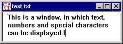

This window is used to display documents which consist of normal text (with no non-displayable special characters). In such a document text can also be searched and replaced (see menu Edit).

With the View menu you can change the display of the text window:
| Alphabet | Characters which are not part of the alphabet are grayed out in the current window. |
| End of Line | Switches the display of end of lines as special characters on or off. |
| Line Wrap | Switches the display of line wraps as special characters on or off. |
| Whitespace | Switches the display of whitespaces as special characters on or off. |
| Font | Change the font for the active window. |
With the menu item View \ Font you can adjust in a fast way meaningful sizes and the font type (mono-space or proportional). So "Courier 10" e.g. is good, to have a look at the output of the ADFGVX cipher.
The text editor allows to show documents, which contain non-printable but displayable characters.
Documents which contain non-displayable special characters are displayed in a window for hexadecimal input and output.
It is possible to force display of the window for hexadecimal input and output by selecting the menu option View \ As HexDump.
Remark:
The values (decimal and hexadecimal) of the different ASCII characters can be found in the ASCII table.